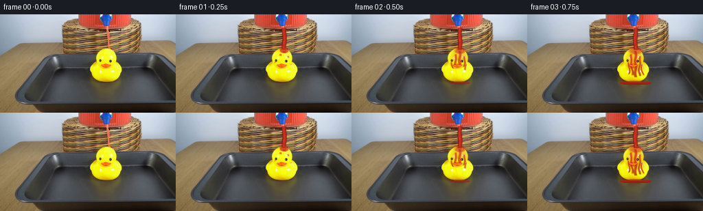

CODING AGENTS AS PIXEL WORLD MODELS
traex/DeepSeek-V4.1-Flash · 0086
点击播放 · 原生 RGB 像素
此结果可播放，但该运行尚未通过最终提交审核。页面展示不代表评测通过。
逐轮保存的候选
回放视频、检查图与代码变化。
每份候选均可单独播放。实际图片检查记录在下方工具轨迹中。
候选 01播放与检查图
点击播放 · 原生 RGB 像素


展开代码变化
--- 上一保存版本
+++ 本次保存版本
@@ -0,0 +1,326 @@
+from pathlib import Path
+
+import cv2
+import numpy as np
+from PIL import Image
+
+import artifact_io
+
+
+ROOT = Path(__file__).resolve().parent
+W, H = 256, 144
+FRAMES = 20
+FPS = 4
+
+
+def smoothstep(edge0, edge1, value):
+ value = np.clip((value - edge0) / (edge1 - edge0), 0.0, 1.0)
+ return value * value * (3.0 - 2.0 * value)
+
+
+def soft_disc(x, y, cx, cy, radius, feather=1.0):
+ distance = np.sqrt((x - cx) ** 2 + (y - cy) ** 2)
+ return 1.0 - smoothstep(radius - feather, radius + feather, distance)
+
+
+def soft_ellipse(x, y, cx, cy, rx, ry, feather=1.0):
+ distance = ((x - cx) / rx) ** 2 + ((y - cy) / ry) ** 2
+ return 1.0 - smoothstep(1.0 - feather, 1.0 + feather, distance)
+
+
+def vertical_band(x, center, half_width, feather=1.0):
+ return 1.0 - smoothstep(
+ half_width - feather, half_width + feather, np.abs(x - center)
+ )
+
+
+def source_masks(base):
+ hsv = cv2.cvtColor(base, cv2.COLOR_RGB2HSV)
+ hue, saturation, value = hsv.transpose(2, 0, 1)
+
+ duck = (
+ (hue >= 20)
+ & (hue <= 40)
+ & (saturation >= 145)
+ & (value >= 105)
+ ).astype(np.uint8)
+ duck = cv2.morphologyEx(duck, cv2.MORPH_CLOSE, np.ones((3, 3), np.uint8))
+ count, labels, stats, _ = cv2.connectedComponentsWithStats(duck, 8)
+ if count > 1:
+ largest = 1 + int(np.argmax(stats[1:, cv2.CC_STAT_AREA]))
+ duck = (labels == largest).astype(np.uint8)
+ duck = cv2.dilate(duck, np.ones((3, 3), np.uint8), iterations=1)
+ return duck.astype(np.float32)
+
+
+def paint_stream(frame, t, duck_mask):
+ yy, xx = np.mgrid[0:H, 0:W]
+ active = smoothstep(0.02, 0.16, t)
+
+ # The supplied setup already contains the narrow red delivery stream.
+ # Animate its wet silhouette and internal highlights without moving its base.
+ center = (
+ 157.4
+ + 0.55 * np.sin((yy - 20.0) * 0.23 - t * 7.2)
+ + 0.22 * np.sin((yy - 20.0) * 0.071 + t * 4.0)
+ )
+ half_width = 2.05 + 0.18 * np.sin(yy * 0.31 + t * 5.0)
+ core = vertical_band(xx, center, half_width, 0.8)
+ core *= smoothstep(18.0, 21.0, yy) * (1.0 - smoothstep(49.0, 52.5, yy))
+
+ edge = vertical_band(xx, center, half_width + 1.15, 1.0)
+ edge *= smoothstep(18.0, 21.0, yy) * (1.0 - smoothstep(50.0, 53.0, yy))
+
+ flow = 0.5 + 0.5 * np.sin((yy - 20.0) * 0.83 - t * 13.0)
+ highlight_center = center - 0.72 + 0.18 * np.sin(yy * 0.19 - t * 4.0)
+ highlight = vertical_band(xx, highlight_center, 0.48, 0.55)
+ highlight *= flow * (0.72 + 0.28 * np.sin((yy - 19.0) * 0.39 + t * 3.0))
+
+ dark = np.array([121.0, 24.0, 13.0])
+ liquid = np.array([203.0, 42.0, 27.0])
+ bright = np.array([250.0, 102.0, 75.0])
+
+ alpha_edge = np.clip(edge * active * 0.88, 0.0, 1.0)[..., None]
+ frame[:] = frame * (1.0 - alpha_edge) + dark * alpha_edge
+
+ alpha_core = np.clip(core * active * 0.96, 0.0, 1.0)[..., None]
+ frame[:] = frame * (1.0 - alpha_core) + liquid * alpha_core
+
+ alpha_hi = np.clip(highlight * core * active * 0.48, 0.0, 1.0)[..., None]
+ frame[:] = frame * (1.0 - alpha_hi) + bright * alpha_hi
+
+ # A faint warm reflection just outside the stream gives it volume.
+ halo = vertical_band(xx, center + 1.5, 2.8, 1.5)
+ halo *= smoothstep(20.0, 24.0, yy) * (1.0 - smoothstep(45.0, 51.0, yy))
+ halo *= np.clip(active * (0.035 + 0.025 * np.sin(t * 3.4)), 0.0, 1.0)
+ halo = halo[..., None]
+ frame[:] = frame * (1.0 - halo) + np.array([190.0, 75.0, 52.0]) * halo
+ return frame
+
+
+def paint_impact(frame, t, duck_mask):
+ yy, xx = np.mgrid[0:H, 0:W]
+ active = smoothstep(0.05, 0.22, t)
+ settle = 0.83 + 0.17 * np.cos(t * 4.2)
+
+ # Wet contact cap spreading over the top of the duck.
+ cx = 157.2 + 0.38 * np.sin(t * 3.0)
+ cy = 53.2 + 0.18 * np.sin(t * 5.1)
+ rx = 5.3 + 4.8 * smoothstep(0.05, 0.95, t)
+ ry = 2.6 + 2.6 * smoothstep(0.05, 0.95, t)
+ cap = soft_ellipse(xx, yy, cx, cy, rx, ry, 0.7) * duck_mask
+
+ # Crown lobes remain just above the wet contact area.
+ crown = np.zeros((H, W), dtype=np.float32)
+ for side in (-1.0, 1.0):
+ phase = t * 7.5 + (0.0 if side < 0 else 1.7)
+ lobe_x = cx + side * (3.4 + 1.3 * (0.5 + 0.5 * np.sin(phase)))
+ lobe_y = 50.3 + 0.7 * np.sin(phase * 0.71)
+ crown += soft_disc(xx, yy, lobe_x, lobe_y, 1.7 + 0.35 * np.sin(phase), 0.75)
+
+ mask = np.clip(cap + 0.75 * crown, 0.0, 1.0)
+ alpha = mask * active * settle
+
+ yellow = frame.mean(axis=2)
+ shade = np.clip((yellow - 90.0) / 170.0, 0.0, 1.0)
+ liquid = np.stack(
+ (
+ 178.0 + 34.0 * shade,
+ 30.0 + 20.0 * shade,
+ 18.0 + 12.0 * shade,
+ ),
+ axis=2,
+ )
+ frame[:] = frame * (1.0 - 0.82 * alpha[..., None]) + liquid * (
+ 0.82 * alpha[..., None]
+ )
+
+ # Bright moving meniscus at the collision point.
+ glint = soft_ellipse(
+ xx,
+ yy,
+ cx - 1.6 + 0.5 * np.sin(t * 5.3),
+ cy - 0.9,
+ 2.7,
+ 0.65,
+ 0.7,
+ )
+ glint *= active * (0.38 + 0.16 * np.sin(t * 9.0))
+ frame[:] = frame * (1.0 - glint[..., None]) + np.array(
+ [252.0, 123.0, 91.0]
+ ) * glint[..., None]
+ return frame
+
+
+def paint_rivulets(frame, t, duck_mask):
+ yy, xx = np.mgrid[0:H, 0:W]
+ wet = np.zeros((H, W), dtype=np.float32)
+
+ progress = smoothstep(0.08, 0.92, t)
+ paths = [
+ (0.0, 0.0, 2.1, 52.0, 97.0),
+ (-5.5, 1.1, 1.6, 57.0, 93.0),
+ (6.3, -0.8, 1.5, 60.0, 94.0),
+ (-10.8, 2.0, 1.15, 69.0, 90.0),
+ (10.0, -1.6, 1.1, 72.0, 91.0),
+ ]
+
+ for index, (offset, bend, width, y0, y1) in enumerate(paths):
+ y_end = y0 + (y1 - y0) * progress
+ phase = t * (2.4 + 0.25 * index) + index * 1.3
+ path_x = (
+ 157.2
+ + offset
+ + bend * np.sin((yy - y0) * 0.15 + phase)
+ + 0.75 * np.sin((yy - y0) * 0.36 - phase * 0.6)
+ )
+ path = vertical_band(xx, path_x, width, 0.9)
+ path *= smoothstep(y0 - 1.0, y0 + 2.0, yy)
+ path *= 1.0 - smoothstep(y_end - 2.0, y_end + 0.7, yy)
+ wet = np.maximum(wet, path)
+
+ # A thin film grows downward from the cap before distinct rivulets appear.
+ film_depth = 54.0 + 34.0 * smoothstep(0.12, 0.92, t)
+ film = (
+ soft_ellipse(xx, yy, 157.2, 70.0, 12.5, 22.0, 1.0)
+ * (1.0 - smoothstep(film_depth - 4.0, film_depth + 1.0, yy))
+ * 0.33
+ )
+ wet = np.maximum(wet, film)
+ wet *= duck_mask
+
+ yellow = frame.mean(axis=2)
+ vertical_shade = np.clip((102.0 - yy) / 44.0, 0.0, 1.0)
+ red = 174.0 + 30.0 * vertical_shade
+ green = 26.0 + 13.0 * vertical_shade
+ blue = 17.0 + 10.0 * vertical_shade
+ liquid = np.stack(
+ (
+ red + 0.055 * (yellow - 160.0),
+ green + 0.035 * (yellow - 160.0),
+ blue + 0.025 * (yellow - 160.0),
+ ),
+ axis=2,
+ )
+
+ alpha = wet * (0.63 + 0.17 * smoothstep(0.1, 0.8, t))
+ frame[:] = frame * (1.0 - alpha[..., None]) + liquid * alpha[..., None]
+
+ # Narrow specular lines make the wet coating read as liquid.
+ for index, (offset, speed) in enumerate(((-4.6, 1.0), (5.8, -0.7))):
+ y0 = 57.0 + index * 5.0
+ y1 = 88.0 + index * 2.0
+ glint_x = 157.2 + offset + 1.15 * np.sin((yy - y0) * 0.19 + t * speed)
+ glint = vertical_band(xx, glint_x, 0.52, 0.55)
+ glint *= smoothstep(y0, y0 + 4.0, yy) * (1.0 - smoothstep(y1, y1 + 4.0, yy))
+ glint *= duck_mask * progress * (0.18 + 0.10 * np.sin(t * 5.0 + index))
+ frame[:] = frame * (1.0 - glint[..., None]) + np.array(
+ [245.0, 104.0, 76.0]
+ ) * glint[..., None]
+ return frame
+
+
+def paint_splash(frame, t):
+ yy, xx = np.mgrid[0:H, 0:W]
+ active = smoothstep(0.04, 0.20, t)
+ splash = np.zeros((H, W), dtype=np.float32)
+
+ # Tiny airborne droplets, repeated with phase offsets at four frames/second.
+ droplets = (
+ (-1, -1.5, 2.4, 0.0),
+ (1, 1.8, 3.3, 1.1),
+ (-1, 2.4, 4.5, 2.2),
+ (1, -2.2, 5.4, 3.0),
+ (-1, 3.3, 6.0, 4.1),
+ )
+ for side, spread, lift, phase in droplets:
+ cycle = (t * 5.4 + phase) % 4.2
+ life = np.clip(1.0 - cycle / 4.2, 0.0, 1.0)
+ x = 157.0 + side * spread * (0.55 + 0.7 * cycle)
+ y = 52.0 - lift * cycle + 0.65 * cycle * cycle
+ radius = 0.65 + 0.34 * life
+ splash += soft_disc(xx, yy, x, y, radius, 0.55) * life
+
+ alpha = np.clip(splash * active * 0.88, 0.0, 1.0)[..., None]
+ frame[:] = frame * (1.0 - alpha) + np.array([214.0, 56.0, 35.0]) * alpha
+ return frame
+
+
+def paint_puddle(frame, t, duck_mask):
+ yy, xx = np.mgrid[0:H, 0:W]
+ active = smoothstep(0.18, 0.75, t)
+ growth = smoothstep(0.18, 0.96, t)
+
+ rx = 10.0 + 16.5 * growth
+ ry = 1.4 + 2.2 * growth
+ wobble = (
+ 0.72 * np.sin(np.arctan2(yy - 100.0, xx - 157.0) * 6.0 + t * 1.5)
+ + 0.32 * np.sin(np.arctan2(yy - 100.0, xx - 157.0) * 11.0 - t * 1.2)
+ )
+ distance = ((xx - 157.2) / rx) ** 2 + ((yy - 100.0) / ry) ** 2
+ puddle = 1.0 - smoothstep(0.94, 1.08, distance + 0.035 * wobble)
+ puddle *= smoothstep(96.3, 98.0, yy)
+ puddle *= 1.0 - smoothstep(102.2, 103.5, yy)
+
+ # Keep the silhouette of the duck crisp and place the spill in front of it.
+ puddle = np.maximum(puddle, puddle * duck_mask)
+ alpha = puddle * active * 0.86
+
+ y_shade = np.clip((102.0 - yy) / 6.0, 0.0, 1.0)
+ liquid = np.stack(
+ (
+ 151.0 + 33.0 * y_shade,
+ 25.0 + 12.0 * y_shade,
+ 17.0 + 8.0 * y_shade,
+ ),
+ axis=2,
+ )
+ frame[:] = frame * (1.0 - alpha[..., None]) + liquid * alpha[..., None]
+
+ highlight = (
+ 1.0
+ - smoothstep(
+ 0.75,
+ 1.25,
+ ((xx - (153.0 + 3.2 * np.sin(t * 2.1))) / (rx * 0.54)) ** 2
+ + ((yy - 98.5) / 0.75) ** 2,
+ )
+ )
+ highlight *= active * (0.24 + 0.10 * np.sin(t * 4.7))
+ frame[:] = frame * (1.0 - highlight[..., None]) + np.array(
+ [234.0, 91.0, 64.0]
+ ) * highlight[..., None]
+ return frame
+
+
+def render_frame(base, duck_mask, index):
+ if index == 0:
+ return base.copy()
+
+ frame = base.astype(np.float32)
+ t = index / FPS
+ paint_stream(frame, t, duck_mask)
+ paint_impact(frame, t, duck_mask)
+ paint_rivulets(frame, t, duck_mask)
+ paint_splash(frame, t)
+ paint_puddle(frame, t, duck_mask)
+ return np.clip(np.rint(frame), 0.0, 255.0).astype(np.uint8)
+
+
+def main():
+ base = np.asarray(Image.open(ROOT / "first_frame.png").convert("RGB"))
+ if base.shape != (H, W, 3):
+ raise ValueError(f"unexpected first-frame shape: {base.shape}")
+
+ duck_mask = source_masks(base)
+ frames = np.stack(
+ [render_frame(base, duck_mask, index) for index in range(FRAMES)], axis=0
+ )
+ assert frames.shape == (FRAMES, H, W, 3)
+ assert frames.dtype == np.uint8
+ assert np.array_equal(frames[0], base)
+ artifact_io.save(frames, ROOT)
+
+
+if __name__ == "__main__":
+ main()
候选 02播放与检查图
可观测工具轨迹
实际执行的命令与返回图片。
命令 1exit 0
/bin/bash -c "pwd && rg --files -g '"'!*.mp4'"' -g '"'!*.webm'"' -g '"'!*.mov'"' | sort"
命令 2exit 0
/bin/bash -c "sed -n '1,240p' prompt.txt"
命令 3exit 0
/bin/bash -c "sed -n '1,280p' GENERATION_RULES.md"
命令 4exit 0
/bin/bash -c 'file first_frame.png && identify first_frame.png 2>/dev/null || true && ls -lah'
命令 5exit 0
/bin/bash -c "sed -n '1,260p' artifact_io.py"
命令 6exit 0
/bin/bash -c "sed -n '1,260p' player_template.html"
命令 7exit 0
/bin/bash -c "python - <<'PY'
from PIL import Image
import numpy as np
im=Image.open('first_frame.png').convert('RGB')
a=np.array(im)
print(im.size, a.shape, a.dtype, a.min(), a.max(), a.mean(axis=(0,1)))
# image coarse RGB block averages, 16x9
h,w=a.shape[:2]
for yy in range(9):
row=[]
for xx in range(16):
b=a[yy*h//9:(yy+1)*h//9, xx*w//16:(xx+1)*w//16]
row.append('%02x%02x%02x'%tuple(np.rint(b.mean((0,1))).astype(int)))
print(' '.join(row))
PY"命令 8exit 0
/bin/bash -c "python - <<'PY' mods=['numpy','PIL','cv2','scipy','skimage','imageio','ffmpeg'] for m in mods: try: x=__import__(m); print(m,'OK',getattr(x,'__version__','')) except Exception as e: print(m,'NO',e) PY command -v ffmpeg || true command -v convert || true"
命令 9exit 0
/bin/bash -c "python - <<'PY'
from PIL import Image
import numpy as np
from collections import Counter
im=np.array(Image.open('first_frame.png').convert('RGB'))
h,w,_=im.shape
# unique colors count
q=(im//16)*16
cols,counts=np.unique(q.reshape(-1,3),axis=0,return_counts=True)
idx=np.argsort(counts)[-30:][::-1]
print('Top 30 16-level colors:')
for i in idx: print(tuple(cols[i]), counts[i], f'{counts[i]/w/h:.1%}')
# rows and columns stats: dominant hue categories
r,g,b=im.transpose(2,0,1).astype(float)
masks={
'yellow':(r>120)&(g>100)&(b<90)&(r>g*1.02),
'red':(r>100)&(r>g*1.4)&(r>b*1.35),
'bright_red':(r>150)&(g<110)&(b<100),
'gray':(np.max(im,2)-np.min(im,2)<35)&(r>60),
'dark':(r<60)&(g<60)&(b<60),
'glass_blue':(b>r*1.1)&(b>g*1.02)&(b>100),
}
for k,m in masks.items():
ys,xs=np.where(m)
print(k, 'n',len(xs),'bbox', (xs.min(),ys.min(),xs.max(),ys.max()) if len(xs) else None)
# per row object counts every 4 px
print('row counts: yellow red brightred dark glassblue')
for y in range(0,h,4):
vals=[int(m[y:y+4].sum()) for m in masks.values()]
print(f'{y:3d}',*vals)
PY"命令 10exit 0
/bin/bash -c "python - <<'PY'
from PIL import Image
im=Image.open('first_frame.png').convert('RGB')
# nearest neighbor 4x and also save some crops
im.resize((1024,576),Image.Resampling.NEAREST).save('.tmp/first_4x.png')
for name,box in [('top',(70,0,220,65)),('mid',(60,30,230,115)),('duck',(80,70,210,144)),('tray',(70,105,230,144))]:
im.crop(box).resize(((box[2]-box[0])*6,(box[3]-box[1])*6),Image.Resampling.NEAREST).save(f'.tmp/{name}.png')
PY"命令 11exit 0
/bin/bash -c "python - <<'PY'
from PIL import Image
import numpy as np
im=np.array(Image.open('first_frame.png').convert('RGB'))
# ANSI truecolor pixel art downsample-ish exact blocks of 2x2; crop x 70..220 y0..144
# print 1 char per pixel using ANSI background, crop 70:220, rows 0:144, width 75 via 2 px horizontal
chars=' .:-=+*#%@'
# grayscale ascii to inspect overall composition exact-ish
for y in range(0,144,2):
s=''
for x in range(64,224,2):
b=im[y:y+2,x:x+2].mean((0,1)); lum=.299*b[0]+.587*b[1]+.114*b[2]
s+=chars[min(9,int(lum/25.6))]
print(f'{y:3d} '+s)
PY"命令 12exit 0
/bin/bash -c "python - <<'PY'
from PIL import Image
import numpy as np
im=np.array(Image.open('first_frame.png').convert('RGB')).astype(int)
# print exact dominant / edge map as color class
# nearest simple classes
classes={
'R': lambda r,g,b: r>100 and r>g*1.35 and r>b*1.3,
'Y': lambda r,g,b: r>100 and g>75 and b<85 and r>g*1.02,
'D': lambda r,g,b: r<65 and g<65 and b<65,
'G': lambda r,g,b: b>95 and b>r*1.12 and b>g*1.03,
'S': lambda r,g,b: abs(r-g)<20 and abs(g-b)<25 and 60<r<190,
'.': lambda r,g,b: True,
}
for y in range(0,144,2):
s=''
for x in range(64,224,2):
r,g,b=im[y:y+2,x:x+2].mean((0,1))
c='.'
for k,fn in classes.items():
if fn(r,g,b): c=k;break
s+=c
print(f'{y:3d} '+s)
PY"命令 13exit 1
/bin/bash -c "python - <<'PY'
from PIL import Image
import numpy as np
from sklearn.cluster import KMeans
im=np.array(Image.open('first_frame.png').convert('RGB'))
p=im.reshape(-1,3).astype(float)
km=KMeans(n_clusters=14,random_state=1,n_init=10).fit(p)
cent=np.rint(km.cluster_centers_).astype(int)
# order by luminance
order=np.argsort(cent.mean(1))
chars='@%#*+=-:. ,' # dark to light maybe
lab=km.labels_.reshape(im.shape[:2])
print('LEGEND')
for i,idx in enumerate(order): print(chars[i],tuple(cent[idx]))
for y in range(0,144,2):
s=''
for x in range(64,224,2):
# pick mode labels block
b=lab[y:y+2,x:x+2].ravel(); v=np.bincount(b).argmax(); pos=np.where(order==v)[0][0]
s+=chars[pos]
print(f'{y:3d} '+s)
PY"命令 14exit 0
/bin/bash -c "python - <<'PY'
from PIL import Image
import numpy as np
from sklearn.cluster import KMeans
im=np.array(Image.open('first_frame.png').convert('RGB'))
p=im.reshape(-1,3).astype(float)
km=KMeans(n_clusters=14,random_state=1,n_init=10).fit(p)
cent=np.rint(km.cluster_centers_).astype(int)
order=np.argsort(cent.mean(1))
chars='@%#*+=-:. ,oO0Q'
print('LEGEND')
for i,idx in enumerate(order): print(chars[i],tuple(cent[idx]))
lab=km.labels_.reshape(im.shape[:2])
for y in range(0,144,2):
s=''
for x in range(64,224,2):
b=lab[y:y+2,x:x+2].ravel(); v=np.bincount(b).argmax(); pos=np.where(order==v)[0][0]
s+=chars[pos]
print(f'{y:3d} '+s)
PY"命令 15exit 0
/bin/bash -c "python - <<'PY'
from PIL import Image
import numpy as np
im=np.array(Image.open('first_frame.png').convert('RGB'))
# sample key horizontal scans print run classes with raw around bounds
def cls(rgb):
r,g,b=rgb
if r>105 and r>g*1.38 and r>b*1.32: return 'R'
if r>110 and g>90 and b<95 and r>g*1.02: return 'Y'
if b>100 and b>r*1.12 and b>g*1.03: return 'B'
if max(rgb)<75: return 'D'
if max(rgb)-min(rgb)<30 and 60<r<200: return 'G'
return '.'
for y in [5,15,25,35,45,55,65,75,85,95,105,120,130]:
vals=[cls(im[y,x]) for x in range(256)]
runs=[]; st=0
for x in range(1,257):
if x==256 or vals[x]"'!=vals[st]:
if x-st>=2:runs.append(f'"'{st}-{x-1}{vals[st]}')
st=x
print(y,' '.join(runs))
PY"命令 16exit 0
/bin/bash -c "python - <<'PY'
from PIL import Image
import numpy as np
im=np.array(Image.open('first_frame.png').convert('RGB'))
pts=[(x,y) for y in [2,10,20,30,40,50,55,60,65,70,75,80,85,90,95,100,110,120,130,140] for x in [10,50,80,100,115,125,135,145,155,165,175,185,195,205,220,245]]
for y in [2,10,20,30,40,50,55,60,65,70,75,80,85,90,95,100,110,120,130,140]:
print('Y',y)
for x in [10,50,80,100,115,125,135,145,155,165,175,185,195,205,220,245]:
print(f'{x}:{tuple(im[y,x])}',end=' ')
print()
PY"命令 17exit 0
/bin/bash -c "python - <<'PY'
from PIL import Image
import numpy as np
im=np.array(Image.open('first_frame.png').convert('RGB'))
# red mask segmentation
r,g,b=im.transpose(2,0,1).astype(float)
m=(r>115)&(r>g*1.35)&(r>b*1.3)
# component labels scipy
from scipy.ndimage import label
L,n=label(m)
for i in range(1,n+1):
ys,xs=np.where(L==i)
if len(xs)>8: print(i,len(xs),'bbox',xs.min(),ys.min(),xs.max(),ys.max(),'cent',round(xs.mean(),1),round(ys.mean(),1))
# for each row ranges red in x 80..230
for y in range(0,120,2):
xs=np.where(m[y,70:230])[0]+70
if len(xs):
runs=[]; st=xs[0]; last=xs[0]
for x in xs[1:]:
if x>last+1: runs.append((st,last)); st=x
last=x
runs.append((st,last))
print(y,runs)
PY"命令 18exit 0
/bin/bash -c "python - <<'PY'
from PIL import Image
import numpy as np
im=np.array(Image.open('first_frame.png').convert('RGB'))
# exact rows around y 10-60 print classes at each pixel x90..210, compact in 5px chunks color symbols
# represent RGB quantized to nearest major anchors
anchors={'R':(215,70,50),'r':(160,70,55),'B':(30,90,205),'L':(205,216,229),'l':(175,190,207),'b':(140,155,175),'Y':(245,250,25),'y':(210,180,90),'T':(145,120,85),'t':(100,75,50),'D':(65,68,73),'d':(35,32,28),'W':(250,250,250)}
keys=list(anchors); arr=np.array([anchors[k] for k in keys])
for y in range(0,70,2):
row=[]
for x in range(80,216,2):
p=im[y:y+2,x:x+2].mean((0,1))
idx=np.argmin(((arr-p)**2).sum(1)); row.append(keys[idx])
print(f'{y:2d} '+''.join(row))
PY"命令 19exit 0
/bin/bash -c "python - <<'PY'
from PIL import Image
import numpy as np
im=np.array(Image.open('first_frame.png').convert('RGB'))
# Find duck body yellow using saturated yellow and list connected comps
r,g,b=im.transpose(2,0,1).astype(float)
m=(r>175)&(g>145)&(b<120)&(r>g*.92)&(g>b*1.4)
from scipy.ndimage import label
L,n=label(m)
for i in range(1,n+1):
ys,xs=np.where(L==i)
if len(xs)>10: print(len(xs),'bbox',xs.min(),ys.min(),xs.max(),ys.max(),'cent',xs.mean(),ys.mean())
# yellow range per y
for y in range(60,144,2):
xs=np.where(m[y,70:230])[0]+70
if len(xs):
# runs >1
runs=[];st=xs[0];last=xs[0]
for x in xs[1:]:
if x>last+1:
if last-st>=1:runs.append((int(st),int(last)))
st=x
last=x
if last-st>=1:runs.append((int(st),int(last)))
if runs: print(y,runs)
PY"命令 20exit 0
/bin/bash -c "python - <<'PY'
from PIL import Image
import numpy as np
im=np.array(Image.open('first_frame.png').convert('RGB'))
# downscale crop image as sixel? check terminal graphics not. Instead output quantized color names grid per 2 px for duck region 120..190 y50..100
# palette labels nearest
anchors={'K':(35,35,38),'G':(70,72,78),'W':(190,195,200),'Y':(248,250,20),'y':(220,190,10),'O':(253,136,6),'T':(145,120,85),'t':(95,75,50),'R':(215,70,50),'r':(160,70,55),'B':(30,90,205),'L':(205,216,229)}
keys=list(anchors);arr=np.array([anchors[k] for k in keys])
for y in range(50,102,2):
s=''
for x in range(120,192,2):
p=im[y:y+2,x:x+2].mean((0,1)); i=np.argmin(((arr-p)**2).sum(1));s+=keys[i]
print(f'{y:2d} '+s)
PY"命令 21exit 0
/bin/bash -c "python - <<'PY'
from PIL import Image
import numpy as np
im=np.array(Image.open('first_frame.png').convert('RGB'))
# report max colors for pixel locations
for y in range(70,100,2):
vals=[]
for x in range(130,180,2):
p=im[y:y+2,x:x+2].mean((0,1)); vals.append('%02x%02x%02x'%tuple(np.rint(p).astype(int)))
print(y,' '.join(vals))
PY"命令 22exit 0
/bin/bash -c "python - <<'PY'
from PIL import Image
import numpy as np
im=np.array(Image.open('first_frame.png').convert('RGB'))
for y in range(18,58,2):
vals=[]
for x in range(140,171,2):
p=im[y:y+2,x:x+2].mean((0,1)); vals.append('%02x%02x%02x'%tuple(np.rint(p).astype(int)))
print(f'{y:2d}',' '.join(vals))
PY"命令 23exit 0
/bin/bash -c "python - <<'PY'
from PIL import Image
import numpy as np
im=np.array(Image.open('first_frame.png').convert('RGB'))
for y in range(90,112,2):
print('y',y)
for x in range(138,174,2):
print(x,tuple(im[y,x]),end='; ')
print()
PY"命令 24exit 0
/bin/bash -c "python - <<'PY'
from PIL import Image
import numpy as np
im=np.array(Image.open('first_frame.png').convert('RGB'))
# classify pixels using hue and show x,y bounds for yellow body and beak
r,g,b=im.transpose(2,0,1).astype(float)
y=(r>160)&(g>140)&(b<100)&(r/g>.95)
from scipy.ndimage import binary_fill_holes
from scipy.ndimage import label
lab,n=label(y)
# largest component maybe body
for i in range(1,n+1):
ys,xs=np.where(lab==i)
if len(xs)>200:
print('component',len(xs),xs.min(),xs.max(),ys.min(),ys.max())
for yy in range(ys.min(),ys.max()+1,3):
xx=xs[ys==yy]
if len(xx):print(yy,xx.min(),xx.max())
PY"命令 25exit 0
/bin/bash -c "python - <<'PY'
from PIL import Image
im=Image.open('first_frame.png')
print(im.info)
print(im.getbbox(),im.mode)
PY"命令 26exit 0
/bin/bash -c "python - <<'PY'
from PIL import Image
import numpy as np
im=np.array(Image.open('first_frame.png').convert('RGB'))
# inspect rough geometry with channel edge detection at x 130..180 rows 20..60: print raw values in horizontal groups every 3 pix
for y in range(20,62,2):
print(f'Y{y:02d}', end=' ')
for x in range(140,181,4):
p=im[y:y+2,x:x+4].mean((0,1)).astype(int); print('%d/%d/%d'%tuple(p),end=' ')
print()
PY"命令 27exit 0
/bin/bash -c "python - <<'PY'
from PIL import Image
import numpy as np
im=np.array(Image.open('first_frame.png').convert('RGB'))
# Determine tray top shape via dark region per row x ranges
for y in range(54,130,2):
# show RGB at x 80,100,120,140,160,180,200,220
vals=['%02x%02x%02x'%tuple(im[y,x]) for x in [80,100,120,140,160,180,200,220]]
print(y,*vals)
PY"命令 28exit 0
/bin/bash -c "python - <<'PY'
from PIL import Image
import numpy as np
im=np.array(Image.open('first_frame.png').convert('RGB'))
# use Sobel/edge detect to show boundary positions: for each row top 12 gradient x positions around objects
import cv2
g=cv2.cvtColor(im,cv2.COLOR_RGB2GRAY).astype(float)
gx=np.abs(cv2.Sobel(g,cv2.CV_64F,1,0,ksize=3)); gy=np.abs(cv2.Sobel(g,cv2.CV_64F,0,1,ksize=3))
for y in range(0,120,4):
xs=np.argsort(gx[y,70:230])[-8:]+70
print(y,sorted(xs.tolist()))
PY"命令 29exit 0
/bin/bash -c "python - <<'PY'
from PIL import Image
import numpy as np
im=np.array(Image.open('first_frame.png').convert('RGB'))
# count unique exact colors and check quantization: likely generated raster has continuous gradients
u=np.unique(im.reshape(-1,3),axis=0)
print('unique',len(u),'of',256*144)
# dominant gradients/period
print('corner samples')
for y in [0,1,2,10,20,30,40,50,60,70,80,90,100,110,120,130,140,143]:
print(y, [tuple(im[y,x]) for x in [0,1,2,10,50,100,150,200,250,255]])
PY"命令 30exit 0
/bin/bash -c "python - <<'PY'
from PIL import Image
import numpy as np
im=np.array(Image.open('first_frame.png').convert('RGB'))
# full rgb row scan x100..210 y45..60 in blocks, print blue/red/glass contrast values
for y in range(45,61):
vals=[]
for x in range(100,211,5):
p=im[y:y+1,x:x+5].mean((0,1)).astype(int)
vals.append('%d,%d,%d'%tuple(p))
print(f'{y:2d}:',' '.join(vals))
PY"命令 31exit 0
/bin/bash -c "python - <<'PY'
from PIL import Image
import numpy as np
im=np.array(Image.open('first_frame.png').convert('RGB')).astype(float)
# derive per-pixel mask of strong yellow (duck) with source colors and label components after morphological closing
r,g,b=im.transpose(2,0,1)
m=(r>150)&(g>135)&(b<90)&(r>g*.9)
import cv2
m=cv2.morphologyEx(m.astype(np.uint8),cv2.MORPH_CLOSE,np.ones((3,3),np.uint8))
n,L,stats,cents=cv2.connectedComponentsWithStats(m)
for i in range(1,n):
x,y,w,h,area=stats[i]
if area>50: print(i,area,(x,y,w,h))
# bbox for beak orange
m2=(r>220)&(g>80)&(g<190)&(b<70)
n,L,stats,cents=cv2.connectedComponentsWithStats(m2.astype(np.uint8))
for i in range(1,n):
x,y,w,h,area=stats[i]
if area>10:print('orange',area,(x,y,w,h))
PY"命令 32exit 0
/bin/bash -c "python - <<'PY'
from PIL import Image
import numpy as np
im=np.array(Image.open('first_frame.png').convert('RGB'))
# save edge visual and hue classified images for numeric review maybe inspect file sizes
import cv2
hsv=cv2.cvtColor(im,cv2.COLOR_RGB2HSV)
# key masks
for name,m in [
('red',(hsv[:,:,0]<8)&(hsv[:,:,1]>130)&(hsv[:,:,2]>80)),
('yellow',(hsv[:,:,0]>20)&(hsv[:,:,0]<38)&(hsv[:,:,1]>150)&(hsv[:,:,2]>100)),
('blue',(hsv[:,:,0]>95)&(hsv[:,:,0]<130)&(hsv[:,:,1]>80)),
('dark',(hsv[:,:,2]<75)),
]:
Image.fromarray((m*255).astype('uint8')).save('.tmp/'+name+'_mask.png')
print(name,m.sum())
PY"命令 33exit 0
/bin/bash -c "python - <<'PY'
from PIL import Image
import numpy as np
im=np.array(Image.open('first_frame.png').convert('RGB'))
# nearest base anchors, detailed crop using one char per pixel but downsample only y2
anchors={'K':(28,28,30),'D':(55,58,64),'g':(80,84,92),'S':(150,130,95),'s':(110,88,60),'y':(230,220,10),'Y':(247,250,25),'O':(250,125,15),'R':(210,70,50),'r':(140,65,50),'B':(30,90,200),'L':(205,217,230),'l':(170,185,200)}
keys=list(anchors); arr=np.array([anchors[k] for k in keys])
for y in range(0,62,2):
s=''
for x in range(80,216,2):
p=im[y:y+2,x:x+2].mean((0,1)); i=np.argmin(((arr-p)**2).sum(1)); s+=keys[i]
print(f'{y:2d} '+s)
PY"命令 34exit 0
/bin/bash -c "python - <<'PY'
from PIL import Image
import numpy as np
im=np.array(Image.open('first_frame.png').convert('RGB')).astype(float)
# examine horizontal color at y=52 around x 125..185 every pixel
for y in [50,52,54,56,58,60,62,64,66,68,70]:
print('\\ny',y)
for x in range(126,186,2):
print(f'{x}:{tuple(im[y,x].astype(int))}',end=' ')
PY"命令 35exit 0
/bin/bash -c "python - <<'PY'
from PIL import Image
import numpy as np
im=np.array(Image.open('first_frame.png').convert('RGB'))
# build a HTML pixel viewer maybe browser unavailable. use PIL nearest crop and terminal kitty? just save montage
# create enlarged nearest with labels grid every 10 px
from PIL import ImageDraw, ImageFont
im2=Image.open('first_frame.png').convert('RGB').resize((1024,576),Image.Resampling.NEAREST)
d=ImageDraw.Draw(im2)
for x in range(0,257,10):
d.line((x*4,0,x*4,575),fill=(0,255,0),width=1)
if x%20==0:d.text((x*4+2,2),str(x),fill=(0,255,0))
for y in range(0,145,10):
d.line((0,y*4,1023,y*4),fill=(0,255,0),width=1)
if y%20==0:d.text((2,y*4+2),str(y),fill=(0,255,0))
im2.save('.tmp/grid.png')
PY"命令 36exit 0
/bin/bash -c "python - <<'PY'
from PIL import Image
import numpy as np
im=np.array(Image.open('first_frame.png').convert('RGB'))
# separate central object mask red + brown + dark to get contours per row
r,g,b=im.transpose(2,0,1).astype(float)
red=(r>105)&(r>g*1.35)&(r>b*1.3)
# print all pixels y=20..56, x=130..205 with compact true color code from clusters using KMeans central crop
from sklearn.cluster import KMeans
crop=im[18:58,125:215].reshape(-1,3)
km=KMeans(n_clusters=12,random_state=0,n_init=10).fit(crop)
cent=np.rint(km.cluster_centers_).astype(int)
chars='0123456789AB'
for i,c in enumerate(cent): print(i,tuple(c))
lab=km.predict(im.reshape(-1,3)).reshape(144,256)
for y in range(18,58,2):
s=''
for x in range(125,215,2):
b=lab[y:y+2,x:x+2].ravel();s+=chars[np.bincount(b).argmax()]
print(f'{y:2d} '+s)
PY"命令 37exit 0
/bin/bash -c "python - <<'PY'
from PIL import Image
import numpy as np, cv2
im=np.array(Image.open('first_frame.png').convert('RGB'))
g=cv2.cvtColor(im,cv2.COLOR_RGB2GRAY)
gx=np.abs(cv2.Sobel(g,cv2.CV_32F,1,0,ksize=3)); gy=np.abs(cv2.Sobel(g,cv2.CV_32F,0,1,ksize=3))
e=np.clip(np.maximum(gx,gy)/4,0,255).astype(np.uint8)
chars=' .:-=+*#%@'
for y in range(0,130,2):
s=''
for x in range(80,230,2):
v=e[y:y+2,x:x+2].max();s+=chars[min(9,int(v/25.6))]
print(f'{y:3d} '+s)
PY"命令 38exit 0
/bin/bash -c "python - <<'PY'
from PIL import Image
import numpy as np
im=np.array(Image.open('first_frame.png').convert('RGB'))
# print central region y18..60 at x=140..170 exact column values every 2 rows already did. Need spatial map of red vs background
# classify central by red strength and print x135..185 all columns as R if red
r,g,b=im.transpose(2,0,1).astype(float)
for y in range(15,61):
s=''
for x in range(125,195):
if r[y,x]>105 and r[y,x]>g[y,x]*1.4 and r[y,x]>b[y,x]*1.3:s+='R'
elif r[y,x]>85 and g[y,x]<70:s+='r'
elif r[y,x]<80 and g[y,x]<80 and b[y,x]<85:s+='D'
elif r[y,x]>160 and g[y,x]>140 and b[y,x]>100:s+='L'
else:s+='.'
print(f'{y:2d} '+s)
PY"命令 39exit 0
/bin/bash -c "python - <<'PY'
from PIL import Image
import numpy as np, cv2
im=np.array(Image.open('first_frame.png').convert('RGB'))
hsv=cv2.cvtColor(im,cv2.COLOR_RGB2HSV)
H,S,V=hsv.transpose(2,0,1)
m=((H<9)|(H>174))&(S>145)&(V>115)
from scipy.ndimage import label
L,n=label(m)
for i in range(1,n+1):
ys,xs=np.where(L==i)
if len(xs)>20: print(len(xs),(xs.min(),ys.min(),xs.max(),ys.max()),'cent',xs.mean(),ys.mean())
print('rows')
for y in range(0,61,2):
xs=np.where(m[y,90:220])[0]+90
if len(xs):
runs=[];st=last=xs[0]
for x in xs[1:]:
if x>last+1:runs.append((int(st),int(last)));st=x
last=x
runs.append((int(st),int(last)))
print(y,runs)
PY"命令 40exit 0
/bin/bash -c "python - <<'PY'
from PIL import Image
import numpy as np, cv2
im=np.array(Image.open('first_frame.png').convert('RGB'))
# source frame structural edge coordinates for vertical lines by summing gx central
g=cv2.cvtColor(im,cv2.COLOR_RGB2GRAY).astype(float)
gx=np.abs(cv2.Sobel(g,cv2.CV_64F,1,0,ksize=3))
for a,b in [(0,30),(30,60),(60,100),(100,130)]:
score=gx[a:b,80:230].sum(0)
inds=np.argsort(score)[-20:][::-1]+80
print(a,b,[(int(i),round(score[i-80])) for i in inds])
# y edge score
gy=np.abs(cv2.Sobel(g,cv2.CV_64F,0,1,ksize=3))
score=gy[0:130,80:230].sum(1)
inds=np.argsort(score)[-20:][::-1]
print('ys',[(int(i),round(score[i])) for i in inds])
PY"命令 41exit 0
/bin/bash -c "python - <<'PY'
from PIL import Image
import numpy as np
im=np.array(Image.open('first_frame.png').convert('RGB'))
# Central glass region boundaries using chroma: print at y=10 and y=20 horizontal colors every pixel x90-210 grouped 5
for y in [10,20]:
print('Y',y)
for x in range(90,211,5):
p=im[y:y+1,x:x+5].mean((0,1)).astype(int)
print(f'{x:3d}:{p[0]:3d},{p[1]:3d},{p[2]:3d}',end=' ')
if (x-90)%25==20:print()
print()
PY"命令 42exit 0
/bin/bash -c "python - <<'PY'
from PIL import Image
import numpy as np
im=np.array(Image.open('first_frame.png').convert('RGB'))
# print central pixel grid y=0..55 x=110..195 1 char every 2x1 blocks using strongest channel map
for y in range(0,58,2):
s=''
for x in range(110,196,2):
p=im[y:y+2,x:x+2].mean((0,1)); r,g,b=p
if b>r*1.15 and b>g*1.05:s+='B'
elif r>g*1.35 and r>b*1.3 and r>100:s+='R'
elif r>180 and g>175 and b<100:s+='Y'
elif r>140 and g>110 and b<95:s+='t'
elif r>105 and g>90 and b<90:s+='s'
elif r>140 and g>140 and b>150:s+='L'
elif r<85 and g<85 and b<90:s+='D'
else:s+='.'
print(f'{y:2d} '+s)
PY"命令 43exit 0
/bin/bash -c "python - <<'PY'
from PIL import Image
import numpy as np
im=np.array(Image.open('first_frame.png').convert('RGB'))
# sample per column medians of rows 22..56 to identify object silhouette background vs colored
for x in range(125,191,2):
p=np.median(im[24:56,x],axis=0).astype(int)
print(x,tuple(p),end='; ')
if (x-125)%16==14:print()
PY"命令 44exit 0
/bin/bash -c "python - <<'PY'
from PIL import Image
import numpy as np, cv2
im=np.array(Image.open('first_frame.png').convert('RGB'))
# build morphological mask for dispenser: use colors brown, red, dark glass in x85..215 y0..60 but show edges
crop=im[:65,80:220]
# normalized laplacian maybe save
g=cv2.cvtColor(crop,cv2.COLOR_RGB2GRAY)
# canny
ed=cv2.Canny(g,25,80)
# print ascii at 2x2
for y in range(0,65,2):
s=''
for x in range(0,140,2):
s+='#' if ed[y:y+2,x:x+2].max() else ' '
print(f'{y:2d} '+s)
PY"命令 45exit 0
/bin/bash -c "python - <<'PY'
from PIL import Image
import numpy as np, cv2
im=np.array(Image.open('first_frame.png').convert('RGB'))
# red area segments at top identify bottle/jar; print mask at lower res with coords
r,g,b=im.transpose(2,0,1).astype(float)
red=(r>110)&(r>g*1.35)&(r>b*1.3)
for y in range(0,61,2):
xs=np.where(red[y])[0]
if len(xs):
runs=[]; st=last=xs[0]
for x in xs[1:]:
if x>last+1:runs.append((int(st),int(last)));st=x
last=x
runs.append((int(st),int(last)))
print(y,runs)
PY"命令 46exit 0
/bin/bash -c "python - <<'PY'
from PIL import Image
import numpy as np
im=np.array(Image.open('first_frame.png').convert('RGB'))
# central candidate keypoints approximate: print exact colors at each 5x3 cell? Instead try OCR-like separate shapes via semantic classes and connected components on dark etc
# inspect palette as 8x8 block means for central 80:230 x0:130
for y in range(0,130,5):
s=''
for x in range(80,230,5):
p=im[y:y+5,x:x+5].mean((0,1));r,g,b=p
if r>100 and r>g*1.4 and r>b*1.3:c='R'
elif r>170 and g>160 and b<110:c='Y'
elif b>r*1.25 and b>g*1.08:c='B'
elif r>165 and g>180 and b>190:c='L'
elif r<55 and g<55 and b<60:c='K'
elif r<85 and g<85 and b<95:c='D'
elif r>110 and g>90 and b<100:c='t'
else:c='.'
s+=c
print(f'{y:3d} '+s)
PY"命令 47exit 0
/bin/bash -c "python - <<'PY'
from PIL import Image
import numpy as np
im=np.array(Image.open('first_frame.png').convert('RGB')).astype(float)
# red liquid colors inside dispenser and red background; sample spatial clusters at y 0..20
for y in [0,5,10,15,18,20]:
print('y',y)
for x in range(100,201,10):
print(x,tuple(im[y,x].astype(int)),end=';')
print()
PY"命令 48exit 0
/bin/bash -c "python - <<'PY'
from PIL import Image
import numpy as np
im=np.array(Image.open('first_frame.png').convert('RGB'))
# column vertical runs at central x, identify RGB around x156
for x in [150,154,156,158,160,162,164]:
print('\\nx',x)
for y in range(15,58):
print(y,tuple(im[y,x]),end='; ')
if y%5==4:print()
PY"命令 49exit 0
/bin/bash -c "python - <<'PY'
from PIL import Image
import numpy as np, cv2
im=np.array(Image.open('first_frame.png').convert('RGB'))
# line structure via grayscale means and edge map: print boundary positions using local color differences to left/right at y 0..60 for x 80..220
# Detect near vertical edges: mean abs horizontal gradient over rows
g=cv2.cvtColor(im,cv2.COLOR_RGB2GRAY).astype(float)
gx=np.abs(cv2.Sobel(g,cv2.CV_64F,1,0,ksize=3))
score=gx[:58,80:225].mean(0)
for x in range(80,225):
if score[x-80]>45:
print(x,round(score[x-80],1))
PY"命令 50exit 0
/bin/bash -c "python - <<'PY'
from PIL import Image
import numpy as np
im=np.array(Image.open('first_frame.png').convert('RGB')).astype(float)
# check periodicity: for each x compare column against x+8 etc, central top
crop=im[:60,90:210]
for d in [1,2,4,8,16,24,32,64]:
a=crop[:,:-d];b=crop[:,d:]
print(d,np.abs(a-b).mean())
PY"命令 51exit 0
/bin/bash -c "python - <<'PY'
from PIL import Image
import numpy as np
im=np.array(Image.open('first_frame.png').convert('RGB'))
# print color class map for full central region at native-ish one char per 2x2 but include bottle bounds by semantic nearest from kmeans crop
from sklearn.cluster import KMeans
crop=im[0:65,80:225]
km=KMeans(n_clusters=10,random_state=4,n_init=10).fit(crop.reshape(-1,3))
cent=np.rint(km.cluster_centers_).astype(int)
# sort by hue-ish: print
for i,c in enumerate(cent):print(i,tuple(c))
lab=km.predict(im.reshape(-1,3)).reshape(144,256)
chars='0123456789'
for y in range(0,66,2):
s=''
for x in range(80,226,2):
b=lab[y:y+2,x:x+2].ravel();s+=chars[np.bincount(b).argmax()]
print(f'{y:2d} '+s)
PY"命令 52exit 0
/bin/bash -c "python - <<'PY'
from PIL import Image
import numpy as np
im=np.array(Image.open('first_frame.png').convert('RGB'))
# save various zoom crops as ppm? terminal can't view. Use image magick absent. Maybe tesseract no.
# print strong line colors around bottle lower rim x120..200 y18..30 as hex map 2x1
for y in range(18,32,2):
print('y',y)
for x in range(120,202,4):
p=im[y:y+2,x:x+4].mean((0,1)).astype(int)
print('%02x%02x%02x'%tuple(p),end=' ')
print()
PY"命令 53exit 0
/bin/bash -c "python - <<'PY'
from PIL import Image
import numpy as np
im=np.array(Image.open('first_frame.png').convert('RGB'))
# check image against exact mirrored symmetry regions maybe AI generated? print row 0/143 uniqueness and blocks
for y in [0,1,20,40,60,80,100,120,128,129,130,131,143]:
print(y, 'unique',len(np.unique(im[y],axis=0)), 'mean',im[y].mean(0))
PY"命令 54exit 0
/bin/bash -c "python - <<'PY'
from PIL import Image
import numpy as np
im=np.array(Image.open('first_frame.png').convert('RGB'))
# color segmentation into 8 categories with clear names, print 1 char per 4x4 block central 80..224,0..132
# use HSV
import cv2
hsv=cv2.cvtColor(im,cv2.COLOR_RGB2HSV)
H,S,V=hsv.transpose(2,0,1)
for y in range(0,132,3):
s=''
for x in range(80,228,3):
hh,ss,vv=np.median(H[y:y+3,x:x+3]),np.median(S[y:y+3,x:x+3]),np.median(V[y:y+3,x:x+3])
if ss>120 and (hh<10 or hh>175) and vv>110:c='R'
elif ss>120 and 18<=hh<38 and vv>120:c='Y'
elif ss>70 and 95<=hh<130 and vv>80:c='B'
elif vv<55:c='K'
elif vv<90:c='D'
elif ss<35 and vv>160:c='L'
elif ss>60 and 10<=hh<22:c='O'
else:c='.'
s+=c
print(f'{y:3d} '+s)
PY"命令 55exit 0
/bin/bash -c "python - <<'PY'
from PIL import Image
import numpy as np
im=np.array(Image.open('first_frame.png').convert('RGB')).astype(float)
# gradient along horizontal lines in bottle top, report mean absolute differences
for y in [0,5,10,15,18,20,22,24]:
d=np.abs(np.diff(im[y,100:210],axis=0)).mean(1)
print(y,'mean',d.mean(),'max',d.max(),'idx',np.argsort(d)[-5:]+100)
PY"命令 56exit 0
/bin/bash -c "python - <<'PY'
from PIL import Image
import numpy as np
im=np.array(Image.open('first_frame.png').convert('RGB'))
# identify glass blue stripe x150..163 y0..18 exact; maybe bottle is transparent but stripe is blue cup? print region to classify boundaries
for y in range(0,20,2):
s=''
for x in range(100,205):
p=im[y,x];r,g,b=map(int,p)
if b>r*1.2 and b>g*1.05:s+='B'
elif r>g*1.35 and r>b*1.3:s+='R'
elif r>180 and g>160 and b>120:s+='L'
elif r>130 and g>100:s+='t'
else:s+='.'
print(f'{y:2d} '+s)
PY"命令 57exit 0
/bin/bash -c "python - <<'PY'
from PIL import Image
import numpy as np
im=np.array(Image.open('first_frame.png').convert('RGB'))
# derive centerline and silhouette of red region by threshold, output each row min max and median x
r,g,b=im.transpose(2,0,1).astype(float)
m=(r>110)&(r>g*1.35)&(r>b*1.3)
for y in range(0,22):
xs=np.where(m[y])[0]
print(y,len(xs),(xs.min(),xs.max()) if len(xs) else None)
PY"命令 58exit 0
/bin/bash -c "python - <<'PY'
from PIL import Image
import numpy as np, cv2
im=np.array(Image.open('first_frame.png').convert('RGB'))
# find large smooth background regions via bilateral? use Canny
g=cv2.cvtColor(im,cv2.COLOR_RGB2GRAY)
ed=cv2.Canny(g,15,50)
# line segments Hough
lines=cv2.HoughLinesP(ed,1,np.pi/180,threshold=20,minLineLength=20,maxLineGap=4)
if lines is not None:
for l in sorted(lines[:,0].tolist(), key=lambda z: -((z[2]-z[0])**2+(z[3]-z[1])**2))[:40]:
print(l)
PY"命令 59exit 0
/bin/bash -c "python - <<'PY'
from PIL import Image
import numpy as np
im=np.array(Image.open('first_frame.png').convert('RGB'))
# report exact max/min positions for broad yellow and broad red masks at each row
r,g,b=im.transpose(2,0,1).astype(float)
ym=(r>170)&(g>160)&(b<100)
rm=(r>110)&(r>g*1.35)&(r>b*1.3)
for y in range(0,105,2):
ys=np.where(ym[y])[0]
rs=np.where(rm[y])[0]
print(f'{y:3d} Y {len(ys):2d} {ys.min() if len(ys) else \"-\"}:{ys.max() if len(ys) else \"-\"} R {len(rs):2d} {rs.min() if len(rs) else \"-\"}:{rs.max() if len(rs) else \"-\"}')
PY"命令 60exit 0
/bin/bash -c "python - <<'PY'
try:
import imageio_ffmpeg; print('imageio_ffmpeg',imageio_ffmpeg.get_ffmpeg_exe())
except Exception as e: print('no imageio_ffmpeg',e)
try:
import av; print('av',av.__version__)
except Exception as e: print('no av',e)
PY"命令 61exit 0
/bin/bash -c "python - <<'PY'
from PIL import Image
import numpy as np, cv2
im=np.array(Image.open('first_frame.png').convert('RGB'))
# print candidate vertical lines x at dark/glass boundary by row medians. detect long vertical continuous edge around x155-160 in y0-50
g=cv2.cvtColor(im,cv2.COLOR_RGB2GRAY)
gx=cv2.Sobel(g,cv2.CV_32F,1,0,ksize=3)
for x in range(130,181):
score=np.abs(gx[0:55,x]).mean()
if score>30: print(x,round(score,1))
PY"命令 62exit 0
/bin/bash -c "python - <<'PY'
from PIL import Image
import numpy as np, cv2
im=np.array(Image.open('first_frame.png').convert('RGB'))
# red horizontal mask row22..56 print as # only strong red central, include x 90..210
r,g,b=im.transpose(2,0,1).astype(float)
m=(r>115)&(r>g*1.3)&(r>b*1.2)
for y in range(22,58):
print(f'{y:2d} '+''.join('#' if m[y,x] else '.' for x in range(90,211)))
PY"命令 63exit 0
/bin/bash -c "python - <<'PY'
from PIL import Image
import numpy as np
im=np.array(Image.open('first_frame.png').convert('RGB'))
# Inspect likely bottle silhouette by 5x5 mean colors on central, print dominant nearest to 12 palette with brightness encoded
anchors=np.array([(215,70,50),(150,80,60),(45,95,200),(245,250,25),(240,135,10),(205,215,225),(160,175,190),(130,110,75),(80,70,50),(55,55,60),(35,30,25)])
chars='RrBYOoGlkK'
for y in range(0,60,3):
s=''
for x in range(90,211,3):
p=im[y:y+3,x:x+3].mean((0,1)); i=np.argmin(((anchors-p)**2).sum(1));s+=chars[i]
print(f'{y:2d} '+s)
PY"命令 64exit 1
/bin/bash -c 'python generate.py'
命令 65exit 0
/bin/bash -c 'python generate.py'
命令 66exit 1
/bin/bash -c "python - <<'PY'
import numpy as np
from PIL import Image
f=np.load('pixels.npz')['pixels']
rgb=np.stack(((f>>16)&255,(f>>8)&255,f&255),axis=2).astype(np.uint8)
base=np.asarray(Image.open('first_frame.png').convert('RGB'))
print('packed',f.shape,f.dtype,'rgb',rgb.shape,rgb.dtype)
print('frame0_exact',np.array_equal(rgb[0],base))
for i in [0,1,2,4,8,12,16,19]:
a=rgb[i]
d=np.abs(a.astype(np.int16)-base.astype(np.int16))
ys,xs=np.where(np.any(d>0,axis=2))
print(i,'changed',len(xs),'meanabs',round(float(d.mean()),3),'max',int(d.max()),'bbox',(int(xs.min()),int(ys.min()),int(xs.max()),int(ys.max())) if len(xs) else None)
PY"命令 67exit 1
/bin/bash -c "python - <<'PY'
import numpy as np
from PIL import Image
f=np.load('pixels.npz')['pixels']
rgb=np.stack(((f>>16)&255,(f>>8)&255,f&255),axis=2).astype(np.uint8).transpose(2,0,1,3)
base=np.asarray(Image.open('first_frame.png').convert('RGB'))
print('packed',f.shape,f.dtype,'rgb',rgb.shape,rgb.dtype)
print('frame0_exact',np.array_equal(rgb[0],base))
for i in [0,1,2,4,8,12,16,19]:
a=rgb[i]
d=np.abs(a.astype(np.int16)-base.astype(np.int16))
ys,xs=np.where(np.any(d>0,axis=2))
print(i,'changed',len(xs),'meanabs',round(float(d.mean()),3),'max',int(d.max()),'bbox',(int(xs.min()),int(ys.min()),int(xs.max()),int(ys.max())) if len(xs) else None)
PY"命令 68exit 0
/bin/bash -c "python - <<'PY'
import numpy as np
from PIL import Image
f=np.load('pixels.npz')['pixels']
rgb=np.stack(((f>>16)&255,(f>>8)&255,f&255),axis=-1).astype(np.uint8).transpose(2,0,1,3)
base=np.asarray(Image.open('first_frame.png').convert('RGB'))
print('packed',f.shape,f.dtype,'rgb',rgb.shape,rgb.dtype)
print('frame0_exact',np.array_equal(rgb[0],base))
for i in [0,1,2,4,8,12,16,19]:
a=rgb[i]
d=np.abs(a.astype(np.int16)-base.astype(np.int16))
ys,xs=np.where(np.any(d>0,axis=2))
print(i,'changed',len(xs),'meanabs',round(float(d.mean()),3),'max',int(d.max()),'bbox',(int(xs.min()),int(ys.min()),int(xs.max()),int(ys.max())) if len(xs) else None)
PY"命令 69exit 0
/bin/bash -c "python - <<'PY'
import numpy as np
from PIL import Image
f=np.load('pixels.npz')['pixels']
rgb=np.stack(((f>>16)&255,(f>>8)&255,f&255),axis=-1).astype(np.uint8).transpose(2,0,1,3)
# source-derived masks
base=rgb[0]
import cv2
hsv=cv2.cvtColor(base,cv2.COLOR_RGB2HSV); H,S,V=hsv.transpose(2,0,1)
duck=((H>=20)&(H<=40)&(S>=145)&(V>=105)).astype(np.uint8)
duck=cv2.morphologyEx(duck,cv2.MORPH_CLOSE,np.ones((3,3),np.uint8))
n,lab,stats,_=cv2.connectedComponentsWithStats(duck,8)
largest=1+np.argmax(stats[1:,cv2.CC_STAT_AREA]);duck=(lab==largest).astype(np.uint8);duck=cv2.dilate(duck,np.ones((3,3),np.uint8))
print('duck',duck.sum(),np.where(duck)[1].min(),np.where(duck)[0].min(),np.where(duck)[1].max(),np.where(duck)[0].max())
# average last frame, classify dominant change
a=rgb[-1].astype(float)-base.astype(float)
# print per-row changed counts and mean delta
for y in range(15,110,3):
d=a[y:y+3]; cnt=np.any(np.abs(d)>1,axis=2).sum(); mean=d.reshape(-1,3).mean(0)
print(y,cnt,tuple(np.rint(mean).astype(int)))
# region averages of last frame at key areas
for name,(x0,y0,x1,y1) in {'stream':(150,22,165,48),'ducktop':(140,52,175,75),'duckmid':(135,75,177,98),'tray':(130,97,185,105),'outside':(0,0,60,40)}.items():
print(name,'base',tuple(np.rint(base[y0:y1,x0:x1].mean((0,1))).astype(int)),'last',tuple(np.rint(rgb[-1,y0:y1,x0:x1].mean((0,1))).astype(int)))
PY"命令 70exit 0
/bin/bash -c "python - <<'PY'
import numpy as np
from PIL import Image
f=np.load('pixels.npz')['pixels']
rgb=np.stack(((f>>16)&255,(f>>8)&255,f&255),axis=-1).astype(np.uint8).transpose(2,0,1,3)
base=rgb[0]
# one character per 2x2 block showing dominant semantic change in each frame region
for idx in [1,4,8,12,16,19]:
a=rgb[idx].astype(np.int16); b=base.astype(np.int16); d=a-b
print('\\nFRAME',idx)
for y in range(18,106,3):
s=''
for x in range(126,190,2):
dd=d[y:y+3,x:x+2].reshape(-1,3)
mag=np.abs(dd).mean()
if mag<1.5:c='.'
elif dd[:,0].mean()>15 and dd[:,1].mean()<-10:c='R'
elif dd[:,1].mean()<-5:c='r'
elif dd[:,0].mean()>8:c='o'
else:c='-'
s+=c
print(f'{y:3d} '+s)
PY"命令 71exit 0
/bin/bash -c "python - <<'PY'
import numpy as np
from PIL import Image,ImageDraw
f=np.load('pixels.npz')['pixels']
rgb=np.stack(((f>>16)&255,(f>>8)&255,f&255),axis=-1).astype(np.uint8).transpose(2,0,1,3)
# candidate frame RGB stats in pour and duck region
for i in range(20):
a=rgb[i]
print(i, tuple(np.rint(a[22:48,150:165].mean((0,1))).astype(int)),tuple(np.rint(a[58:95,138:176].mean((0,1))).astype(int)),tuple(np.rint(a[98:103,140:176].mean((0,1))).astype(int)))
PY"命令 72exit 0
/bin/bash -c "python - <<'PY'
import numpy as np
from PIL import Image
f=np.load('pixels.npz')['pixels']
rgb=np.stack(((f>>16)&255,(f>>8)&255,f&255),axis=-1).astype(np.uint8).transpose(2,0,1,3)
# color counts in duck bounding region each frame, red saturated thresholds
for i in range(20):
a=rgb[i].astype(float); r,g,b=a.transpose(2,0,1)
region=np.zeros((144,256),bool);region[48:101,128:181]=True
m=(r>120)&(r>g*1.45)&(r>b*1.4)®ion
print(i,int(m.sum()))
PY"命令 73exit 0
/bin/bash -c "python - <<'PY'
import numpy as np
from PIL import Image
f=np.load('pixels.npz')['pixels']
rgb=np.stack(((f>>16)&255,(f>>8)&255,f&255),axis=-1).astype(np.uint8).transpose(2,0,1,3)
# analyze color at duck center coords across frames
for y,x in [(60,157),(70,157),(80,157),(90,157),(97,157),(100,157),(100,145),(100,170),(52,157),(55,150),(55,165)]:
print((x,y),[tuple(map(int,rgb[i,y,x])) for i in [0,1,2,3,4,8,12,16,19]])
PY"命令 74exit 0
/bin/bash -c "python - <<'PY'
import numpy as np
from PIL import Image,ImageDraw
f=np.load('pixels.npz')['pixels']
rgb=np.stack(((f>>16)&255,(f>>8)&255,f&255),axis=-1).astype(np.uint8).transpose(2,0,1,3)
# create 4x5 enlarged sheet no text, for own numeric review via pixel stats
for idx in range(20):
Image.fromarray(rgb[idx]).resize((512,288),Image.Resampling.NEAREST).save(f'.tmp/f{idx:02d}_2x.png')
# save diffs amplified for frames
for idx in [1,2,4,8,12,16,19]:
d=np.abs(rgb[idx].astype(np.int16)-rgb[0].astype(np.int16)).astype(np.uint8)
Image.fromarray(np.clip(d*4,0,255).astype(np.uint8)).save(f'.tmp/d{idx:02d}.png')
PY"命令 75exit 0
/bin/bash -c "python - <<'PY'
from pathlib import Path
import imageio_ffmpeg,subprocess
frames=Path('frames')
ff=imageio_ffmpeg.get_ffmpeg_exe()
cmd=[ff,'-y','-framerate','4','-i',str(frames/'%02d.png'),'-vf','scale=1024:576:flags=neighbor','-c:v','libx264','-pix_fmt','yuv420p','-crf','14','-movflags','+faststart','video.mp4']
p=subprocess.run(cmd,capture_output=True,text=True)
print('return',p.returncode)
print(p.stdout[-1000:]);print(p.stderr[-2000:])
PY"命令 76exit 0
/bin/bash -c "python - <<'PY'
from pathlib import Path
import imageio_ffmpeg, subprocess
ff=imageio_ffmpeg.get_ffmpeg_exe()
cmd=[ff,'-y','-framerate','4','-i',str(Path('frames')/'%02d.png'),'-c:v','libx264','-pix_fmt','yuv420p','-crf','12','-movflags','+faststart','video.mp4']
p=subprocess.run(cmd,capture_output=True,text=True)
print('encode_return',p.returncode)
print('\\n'.join(line for line in p.stderr.splitlines() if line.startswith('Output #') or line.startswith('frame=') or 'Video:' in line))
PY"命令 77exit 0
/bin/bash -c 'python generate.py'
命令 78exit 0
/bin/bash -c "python - <<'PY'
from pathlib import Path
import numpy as np
from PIL import Image
import imageio_ffmpeg, subprocess
f=np.load('pixels.npz')['pixels']
rgb=np.stack(((f>>16)&255,(f>>8)&255,f&255),axis=-1).astype(np.uint8).transpose(2,0,1,3)
base=np.asarray(Image.open('first_frame.png').convert('RGB'))
assert rgb.shape==(20,144,256,3)
assert np.array_equal(rgb[0],base)
assert all(np.array_equal(rgb[i],np.asarray(Image.open(f'frames/{i:02d}.png').convert('RGB'))) for i in range(20))
ff=imageio_ffmpeg.get_ffmpeg_exe()
p=subprocess.run([ff,'-y','-framerate','4','-i','frames/%02d.png','-c:v','libx264','-pix_fmt','yuv420p','-crf','12','-movflags','+faststart','video.mp4'],capture_output=True,text=True)
assert p.returncode==0,p.stderr
print('verified frames:',rgb.shape,'fps: 4','duration: 5.0s','frame0_exact: True')
print('changed pixels by frame:',[int(np.any(rgb[i]"'!=base,axis=2).sum()) for i in range(20)])
print('"'video bytes:',Path('video.mp4').stat().st_size)
PY"命令 79exit 0
/bin/bash -c 'git status --short 2>/dev/null || true; ls -lh generate.py pixels.npz video.mp4 inspection.png transition_check.png index.html frames/00.png frames/19.png'
命令 80exit 0
/bin/bash -c "python - <<'PY'
import av
c=av.open('video.mp4')
s=c.streams.video[0]
print('frames',s.frames,'fps',s.average_rate,'duration',float(s.duration*s.time_base),'size',s.width,s.height,'codec',s.codec_context.name)
PY"保存候选 2 份；完成命令 80 次；可验证图片返回 0 张。原始 API 响应与完整日志保留在本地。